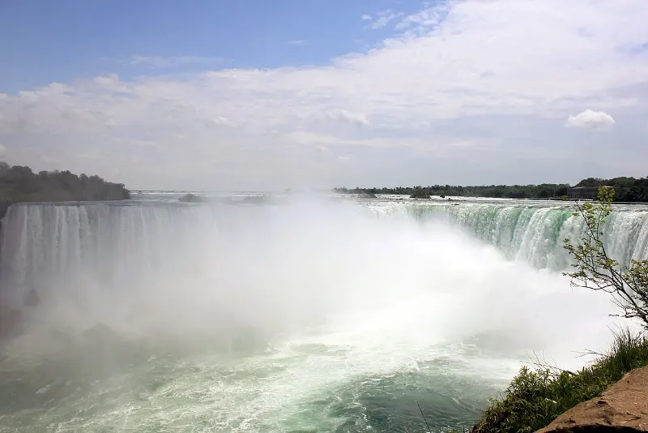
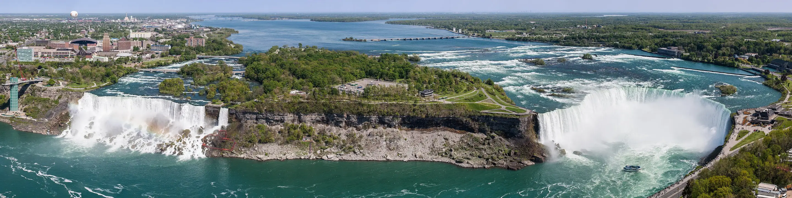
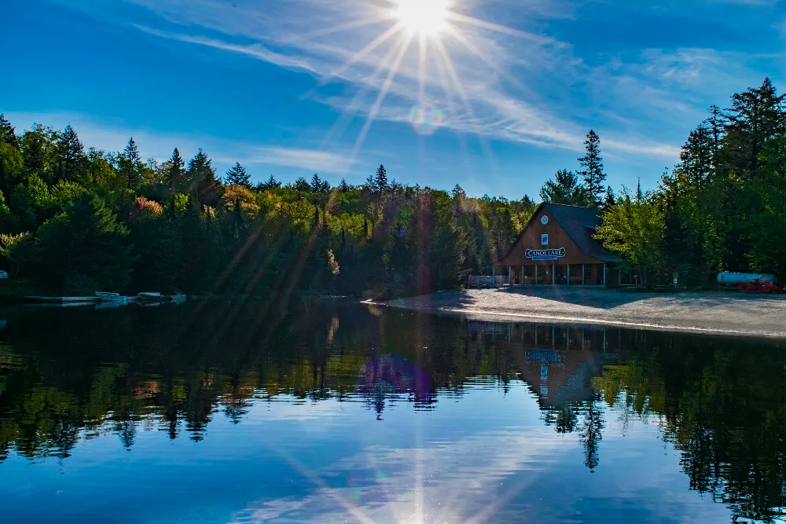
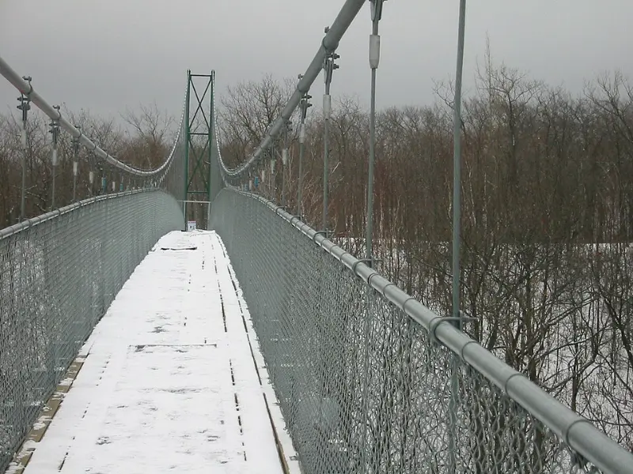
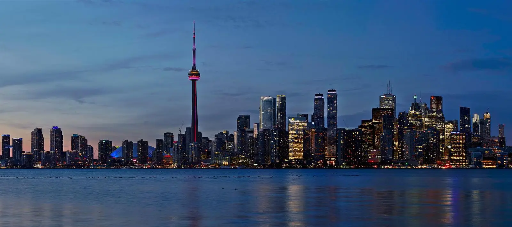

Niagara Falls
Niagara Falls, Ontario
Why go
- Region
- Category

World 01 of 04 · Ontario
Nature & Outdoor Experiences Water. Forests. Cliffs. Wilderness.
Photo — Indian Head Cove, Bruce Peninsula National Park

Nature & Outdoor Experiences

Photo — Niagara Falls · Skylon Tower
Collection 01

Niagara Falls, Ontario
Why go
South Bruce Peninsula, Ontario
Why go

Photo — Whitefish Lake, Algonquin Provincial Park
Collection 02



Next world · 02
Culture & Iconic Places
